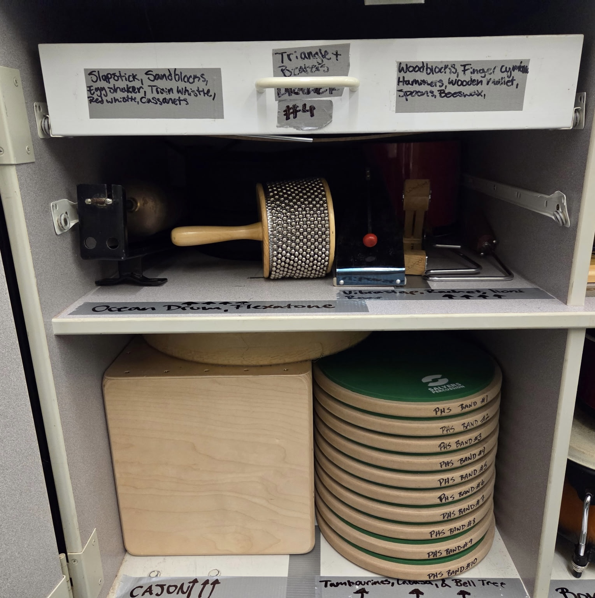

"Present a plan for ensuring the availability and transportation of necessary personnel and materials for use at next year's Homecoming Assembly"
Every person selected to participate in the assembly will be present and prepared in the correct location at the correct time.
The process of fixing any issues is carried out thoroughly and efficently.
Simply, there are three parts to an assembly, the people, parts, and the precision (the timing and coordination of events, but with a P). If any one part of the Three P's are disrupted, the whole event is affected.
Every item or prop used an event such as the Homecoming Assembly should be should be tracked and returned to their proper location after use.
The proper system would be having whoever takes props to an event be held accountable for returning them correctly.

Logistics are part of almost every organized event or operation. To me, they're about making sure everything behind the scenes works the way it should so the event itself can run smoothly.
Having the opportunity to have a full year of learning about and working working with logistics means that
I'm setting up myself and those around me for success in both present and future.
JQP example: knowing when to arrive, how long setup takes, and how long we can play.